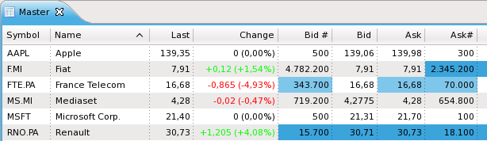
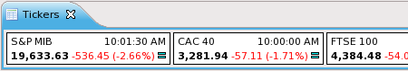

The watchlist view allows you to keep track of the price trend of the securities.

Create a watchlist using the File -> New -> Watchlist menu. The watchlist wizard allows you to define the name of the watchlist and the columns to display. To add securities to a watchlist drag a security from the navigator view and drop it to the watchlist.
A specialized tickers view is suitable to display indexes.

Open the view the Window -> Show View -> Tickers menu. To add securities to the tickers view drag a security from the navigator view and drop it to the view.